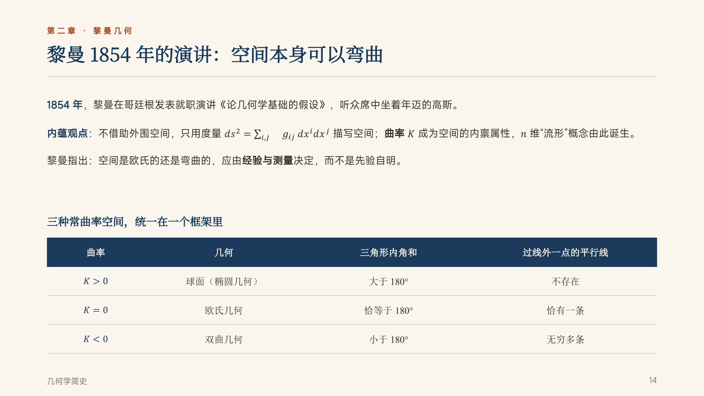
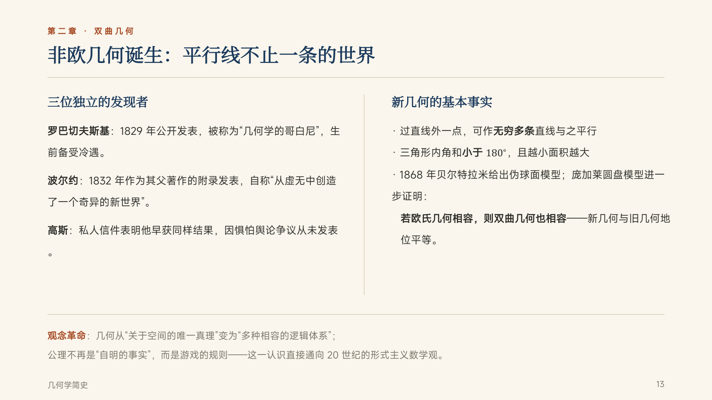
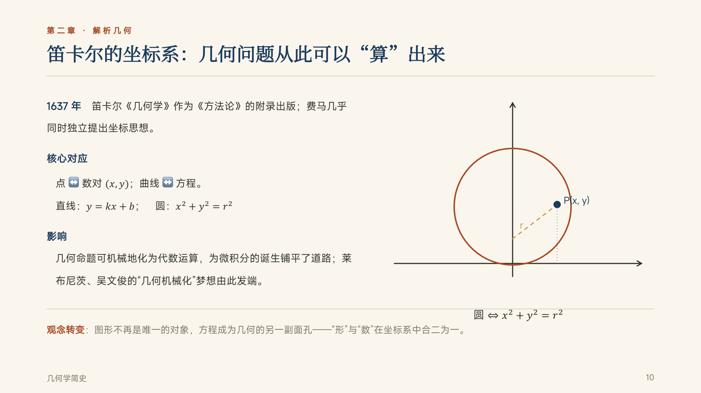
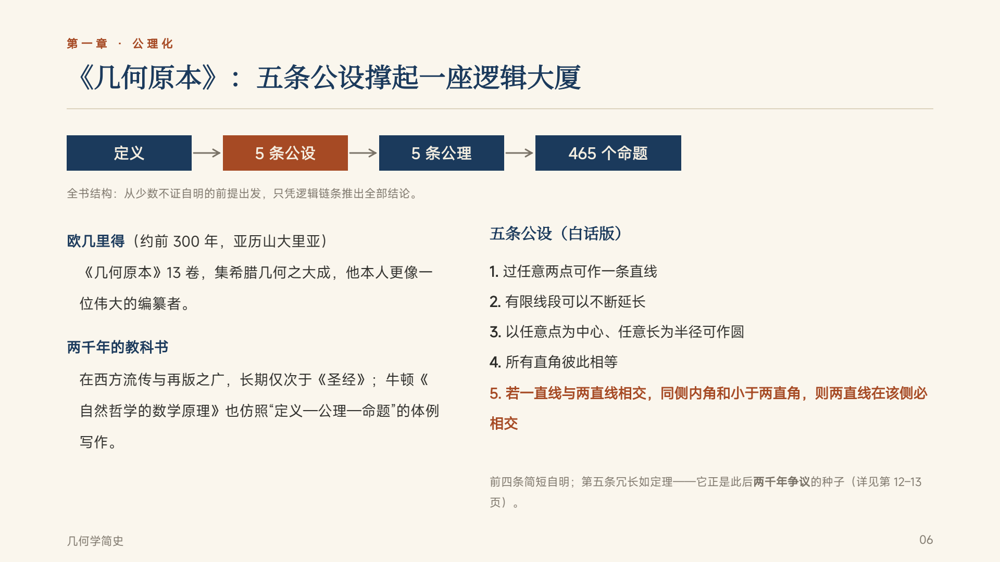
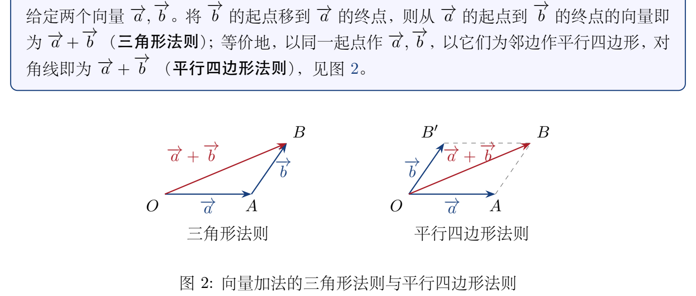
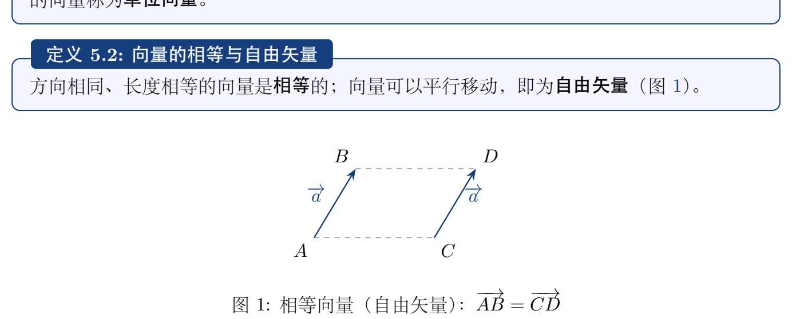
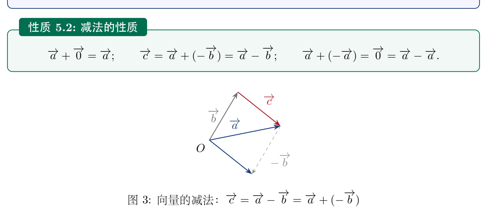
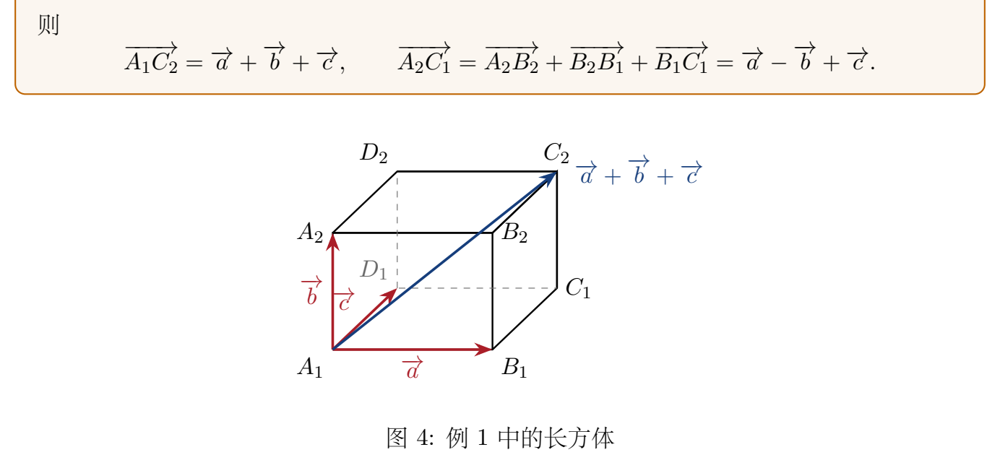
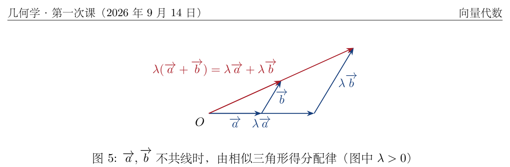
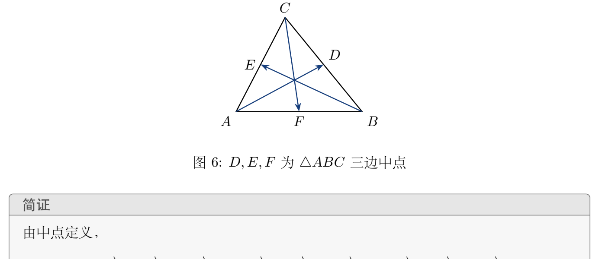

授课：— ｜ 时长：01:40:46 ｜ 逐条字幕：805 条 ｜ 时间段小节：61 ｜ 例题 / 证明：20
[补全]标记的是整理者按标准学科知识补齐的内容，不是课堂板书；[?]标记转写存疑处；[按图还原]是把黑板图形文字化的描述。其余为课堂讲授内容的还原。
本节为几何学第一课，图形与辅助线依赖黑板原图；讲义中 [按图还原] 为文字化描述，配套课堂笔记 PDF 后续再挂图版。 ## 一、课程定位、AI 对数学的冲击与学习主权（00:01:44—00:07:25）
几何学课程是数学专业三大课程、三大基石之一：一个是几何，一个是分析，再一个是代数。对强基班的同学来说，开设的三门课程全部是荣誉课程，因此起点更高一点。
首先要讲一点：AI 现在对数学的冲击特别严重。在 6 月份之前，讲下面这些话实际上都没问题；6 月份之后，也就是最近这两三个月，AI 把数学当中最难的一些问题一个一个都攻克了。于是很多人都觉得，数学今后的发展好像完全由 AI 代替就可以了。老师现在每天都在关注 AI 对数学的冲击。真是这样的话，很多数学家都在讲：这样下去，人类的事业就完全垮掉了——没有自己独立的思想，在 AI 面前就没有主权。
前天在西湖大学讨论这件事，来了好几位院士。礼拜五的时候，几位年轻人说开学要跟同学们讲点什么；老师有点担心，因为其中有些年轻人态度很极端，主张要把 AI 用到极致的程度，所有工作都要用得通透。老师说，这话在三个月之前怎么讲都没问题，现在不能这样讲，而且要统一口径，私下里先统一一下：应该跟你们讲什么、讲什么样的话，然后你们再自己去发挥。为什么？
一个礼拜之前，纽约市从 9 月 1 号开始禁止中小学在教学当中使用 AI，这是教学当中用 AI 的事情；他们管不到大学，每个大学生都是自由的。
大学里我们现在学的数学，实际上是一种语言。为什么很多同学最头痛的就是数学？因为这门语言用不好：很多同学明明说”我已经写清楚了”，结果最后得分很低，甚至不得分——他在用数学语言的时候，自以为写出来的逻辑是对的，但写出来的时候是错的。数学最基本的东西就是：这是一种语言。
现在的大模型，形式上就是一个语言模型；这种模型实际上也就是学会了一种语言。机器相当于学会了说我们人类的数学语言，它们学会了；而我们呢，现在还要学。
老师反问：如果机器学会了，我们是不是就不用学了？那就出问题了——我们会被它们牵着鼻子走，人在数学上就失去了自己的主权。
中小学是基础教育；大学这个层次，前面一年半或者两年，跟后面的阶段完全是两回事。前面这一年半到两年时间实际上就是打基础。如果打基础的时候全面用 AI，那就完了：计算能力、该学的东西基本上都不会，连该跟机器提什么问题都不知道，更不知道该问到什么样的高度——这件事很可怕。
所以要统一口径跟你们讲：在前面打基础这个关键点上，还是要坚守本性——该做的题目还是要做，该花时间思考的问题还是要花时间想。理想当中，老师希望有些题目想不出来、有些问题想不清楚时，你们能花一两个小时甚至一两天去想这个问题；但恐怕做不到，你们肯定会看到旁边有同学用某个工具 一问，马上就出来答案。
老师反问：“那他都清楚吗？”整个学习过程里少了那几分钟”很痛、很慢”的琢磨，答案来得太轻松，问题恰恰出在这里。
现在没有办法强制你们不用 AI；老师自己现在每天写论著 也都是用 AI。
就现在的教学情况而言，对老师、对同学来说，用哪一本教材实际上无所谓。要紧的是，你们自己在建立数学知识、提高能力的过程当中把基础打扎实。
去年这个时候上完课，老师发现公众号上有同学把自己讲的课堂笔记全部传了上去；看了一下，发现好多处自己根本没讲过的内容，他都说成是老师讲的，而且错误的东西也说成是老师讲的，这个情况很可怕。
从那时候开始，老师改用 AI 帮自己生成讲稿，检查一遍之后上传到网上。所以你们现在事先能看到的，是去年这门课的课堂讲稿，大体内容就是当时讲的样子；但今天讲完之后，老师肯定会生成一份新的大纲，新的材料也会放上去。
所以教材到底用哪一本，不是太重要。去年还是前年的一次教材检查中，说以前用的这本书是 2008 年第一版的，太老了，一定要更新换代；还说其他学科更新换代比较快，[这门课] 也要我们用一本新教材。
新教材的情况是这样的：2023、2024 年的时候，老师参与推出了一套”101 计划”教材。每门课都请了专家，几何学也在其中；当时有一个咨询小组 [?]，讨论几何学与微分几何 这两门课该怎样写教材。北大、复旦、中科大三个小组都愿意各写一本 101 计划教材，但到现在为止，只有中科大把教材拿出来了，北大和复旦的两组老师都没有拿出来。所以现在只能提供给你们这一本教材。
这本教材看上去观点是不错的，但与中学的衔接有点欠缺：观点提高之后，跟你们以前学过的内容衔接不起来。
还有一个问题是全国大学生数学竞赛：老师身上这件汗衫就是大学数学竞赛夏令营的 T 恤，今年的夏令营在烟台大学办。如果用这本 101 计划教材，你们参加竞赛恐怕拿不到名次，因为讲课的内容跟不上；竞赛实际上是跟别人比，不是自己跟自己比，比的是别人。
这本教材有一个总体安排：以欧氏几何 为主，其次才是其他几种。前面几章内容都是欧氏几何 的内容，后面才是射影几何、仿射几何 等等这样一些其他的问题。所以讲课的主要内容，老师还是按原来的体系 从旧教材里拿出来；反正现在大部分内容基本上都在这本教材里，有些题目、章节 在这里可能找不到。
老师现在选题，也不是直接在一本教材里挑，而是让 AI 帮着找适用于这两门课 的题目：从简单到难，每次出十道题，另外再加一些挑战类型的、稍微难一点的题；AI 会帮着凑出来，老师再核一遍，看内容是不是匹配。
这些内容，你们可以参考去年讲课的课堂讲稿；但真正讲完之后，老师会把所讲的东西全部分享给大家。
讲到这里，先开始讲一点几何学的发展史——几何学的发展史，实际上就是整个数学的发展史。
几何学是怎么出现的？实际上就是从测地术、测量开始，到公理化这样一个几何学严格化的过程。最早出现的是”数”：在绳子上打几个结，1、2、3、4，整数就出来了；但”长度是什么”，就要靠测量，于是测量出现了。所以最早出现的数学跟测地 有关，是以测地的形态出来的。
第一节课讲的就是这个：几何学起源的三千多年——从公元前一千多年到现在，三千多年，讲的就是从测地经验到严格化、公理化、形式化。我们要回答的是下面三个问题。
问题一：几何学怎样从测地经验上升为演绎推理的科学。
问题二：代数——包括坐标和变换——怎样一次次地重塑几何学的含义。你看到一个方程，看似是代数对象，实际上它就是一个几何问题。
问题三：公理化——如何让几何学完成严格化，成为现代数学的方式。
听完第一课，你们要能够说出几何学从起源到公理化的完整一条主线；要能比较欧几里得 [?] 的公理化与希尔伯特 [?] 的公理化体系的差异；还要能用克莱因纲领 [?]（Erlangen 纲领）的观点，给每一种几何进行归类。
先从公元前 3000 年讲起：缘起是四大文明（课上提到中国、古印度等），它们在丈量和营造当中各自独立地发展出了几何学。这里看到的第一个难题就是长度丈量。
长度是容易测量的：给定单位之后，就可以量出这个长度是多少。难的是求面积——怎么把长度变成面积？两个数乘一下就变成面积，三个数相乘就变成体积，这在古代没有系统知识的条件下，都是凭经验得来的。
古代靠代代相传的经验，学会求各种基本图形的面积：三角形底乘高除以 2、四边形的面积、梯形 的面积、圆的面积；圆的面积实际上很晚才正式得出。
最早的一份材料是纸草书，其中称为《莫斯科纸草书》的，约公元前 1810 年 [?]；古埃及人已经学会计算四棱台的体积，并用于金字塔这样的工程。
以前有人讲金字塔可能是外星人造的，或者是上一代人类造的。从唯物的观点来想：如果金字塔是我们这一代人、延续几千年的人造的，那么营造肯定用到了很多几何知识。埃及人丈量土地是拿手好戏、是专家，因为尼罗河每年泛滥，每年当中要重新丈量好几次土地；测地术就是从这个阶段开始的。
“几何学”（geometry）这个词实际上是两个词拼成的：前一个词大致指”大地”，第二个词 metry 就是”测量”。所以”大地测量”就是几何学，古代把它看成测量大地用的学问。
几何学还有一个来源，就是建造庙宇：像金字塔，还有一些庙宇，都要用几何学来建造房子。
过了古代这一关，紧接着就到希腊人。希腊人追求的不是”怎么算”，而是”为什么”——这才是关键的变化。
公元前 624 到 546 年，有一位叫泰勒斯的人非常厉害：他用相似三角形测量金字塔的高度，被尊称为几何证明传统的第一人。
再往后，差不多与泰勒斯同一时期，是公元前六世纪 [?] 的毕达哥拉斯学派；这个学派给出了勾股定理的证明。
命题／任务：金字塔的高度无法直接丈量，求它的高度。
思路：同一时刻的太阳光可看作平行光，竖直物体与它的影子构成直角三角形；两根不同高度的竖直物体与其影长构成的两个直角三角形相似，于是”物高 : 影长”是同一个比值。
操作步骤（课上只口述了半句”用相似三角形测量金字塔的高度”，以下按学科上正确的方式补全并标 [补全]；[补全] 部分不是当堂讲的，仅作自学参照）： 1. 在平地上竖直立一根已知高度 的标杆，量出它的影长 [补全]。 2. 同一时刻量出金字塔影子的长度，并从影端量到金字塔底面中心，记总长为 [补全]；金字塔的影子自底边起算，底边到顶点正下方的水平距离要一并计入 [补全]。 3. 由相似三角形得 ，故 [补全]。
结论：，即金字塔高度等于”标杆高 × 金字塔影长 ÷ 标杆影长” [补全]。
意义与易错点：老师借这个例子说明希腊人的转向——不求”怎么算”，而求”为什么”，这正是几何证明传统的开端。易错点在于金字塔的影长必须从底面中心量起，否则相似比不成立 [补全]。
接着看毕达哥拉斯学派给出的勾股定理的证明。老师说明这个图是自动生成的，画得可能不太好；这个图形中学教材里都有：一个直角三角形，三条边上各画一个正方形。设两直角边为 、，斜边为 ，则斜边上正方形的面积是 ，等于两个小正方形面积之和 。那这个怎么证明呢？
命题：直角三角形两直角边为 、，斜边为 ，则
[按图还原] 已知与作法：图中只有一个直角三角形，以及分别以三条边为边向外作的三个正方形；两条直角边上的小正方形面积分别为 、，斜边上的大正方形面积为 。从直角顶点向斜边作一条垂线并延长，把斜边上的大正方形分成两个长方形。这里只写课上出现过的元素：直角三角形、三条边上各一个正方形、一条垂线及其延长、被分出的两个长方形，以及边长 ；绝不引入图中没有出现的其它点、线标记 [按图还原]。该结论依赖原图，老师说明图是自动生成的、可能画得不够好 [按图还原]。
思路：把斜边上的正方形拆成两个长方形，证明每个长方形与对应直角边上的小正方形面积相等，于是 。
逐步推导（课上只口述到”做一个垂线、延伸一下，这个长方形的面积就跟它相等”“那两个加起来”，以下按学科上正确的方式补全并标 [补全]；[补全] 部分不是当堂讲的，仅作自学参照）： 1. 设斜边上的正方形被那条垂线分成两个长方形，面积记为 、，则 。 2. 标准论证（欧几里得《几何原本》卷 I 命题 47）证明：其中一个长方形与直角边 上的正方形等积，即 ；另一个长方形与直角边 上的正方形等积，即 。依据是”同底且夹在同一对平行线之间的平行四边形（矩形）面积相等”，以及边角边（SAS）全等三角形 [补全]。 3. 老师口述里还给出 等于”斜边上相应一段 × “、 等于”另一段 × ” 的关系；两段相加正好是 ，与上面的面积论证一致，同样得到 [补全]。
结论：，即 。
意义与易错点：老师指出，这个证明与后面会谈到的中国古代勾股证法实际上是完全一致的；并提醒该图是自动生成的、可能画得不太好，看不清时应以”已知—作法—结论”的文字关系为准，不要自行往图里添点添线 [按图还原]。
毕达哥拉斯学派本来一直以为，所有东西都可以由”数”来衡量；所谓”数”就是整数，或者两个整数相除——用现在的话说就是有理数。也就是说，任何一个东西都可以用有理数来刻画。
但学派当中有人发现，通过勾股定理得出的 ，不能由两个整数相除得到；据说他因此自杀了，觉得世界怎么会是这样，竟然存在不能用”数”来刻画的东西。这就是所称的第一次数学危机。
命题： 不是有理数，即不存在整数 （）使 。
思路：反证法。先假设 可写成既约分数，再推出分子、分母同为偶数，与既约矛盾。
逐步推导（课上只报出了” 不能由两个整数相除得到”这一结论，未给出证明；以下按学科上正确的方式补全并标 [补全]，[补全] 部分不是当堂讲的，仅作自学参照）： 1. 假设 ，其中 为互素的整数， [补全]。 2. 两边平方得 ，即 ，故 为偶数，从而 为偶数 [补全]。 3. 设 ，代入得 ，即 ，故 为偶数，从而 也为偶数 [补全]。 4. 同为偶数，与”互素”的假设矛盾 [补全]。
结论： 不能表成两个整数之比，即 [补全]。
意义与易错点：这一发现动摇了”万物皆数（一切皆可用整数或整数之比刻画）“的信念，被称为第一次数学危机；易错点在于必须先把分数取成既约形式，否则”同为偶数”推不出矛盾 [补全]。
再往后，公元前四百多年 [?]，柏拉图创办学园。柏拉图是哲学家，学园起初并不是纯粹的数学机构；但柏拉图学园把几何学放到最高的位置上，门框上面写的就是”不懂几何的人不得入内”。这就把几何学推到了非常神圣的一个高度。
这里引出了三大作图难题。到现在为止还有好多人仍在做这种事，做完了还要寄给老师看，说自己是对；实际上在 19 世纪就已经证明这三大作图难题是不可行的。
命题／任务：给定一个立方体，只用直尺和圆规作出一个新立方体，使它的体积是原立方体体积的两倍。
思路：设原立方体棱长为 ，则新立方体棱长应为 ；问题化为” 是否尺规可作” [补全]。
操作步骤（课上只陈述了题目与”做不了”，以下标 [补全] 的部分不是当堂讲的，仅作自学参照）：尺规能作出的长度只能落在从已知长度出发、经有限次加、减、乘、除与开平方得到的数域里； 是三次方程 的根，不是尺规可作数，故不存在这样的作图步骤 [补全]。
结论：倍立方不能用尺规作出，19 世纪已证明其不可行。
意义与易错点：老师强调这是”用直尺和圆规”作出体积两倍的立方体，不是近似作法，也不是允许用别的工具；至今仍有人声称做出来并寄来求看。
命题／任务：任给一个角，只用直尺和圆规把它分成三个相等的角。
思路：等价于作出该角三分之一大小的角；一般角的三等分会归结为解一个不可约三次方程 [补全]。
操作步骤（课上只说”用直尺圆规把它分成三等分，这是分不出来的”，以下 [补全] 部分不是当堂讲的，仅作自学参照）：取 ，三等分需作出 ；由三倍角公式 得 （），该三次方程在有理数域上不可约，其根不是尺规可作数，故任意角不可三等分 [补全]；某些特殊角（如 、）仍可三等分 [补全]。
结论：三等分任意角不可行，这道题目也做不了。
意义与易错点：“任意角”是关键；不能拿几个恰好能三等分的特殊角当作一般解 [补全]。
命题／任务：给定一个圆，只用直尺和圆规作出一个与它面积相同的正方形。
思路：设圆半径为 ，面积为 ；若所求正方形边长为 ，则 ，即 ，问题化为 （从而 ）是否尺规可作 [补全]。
操作步骤（课上给的理由是”因为是无理数， 是无理数，所以不可能把它变成两个数的乘积”；单凭”无理数”这一条理由并不充分， 也是无理数却可以尺规作出。以下按学科上正确的方式补全并标 [补全]，[补全] 部分不是当堂讲的，仅作自学参照）：尺规可作数都是代数数；1882 年林德曼证明 是超越数，故 不是尺规可作数，不存在这样的作图步骤 [补全]。
结论：化圆为方做不出来。
意义与易错点：易错点是把”无理数”直接当成”不可尺规作出”的判据，正确的判据要看是否落在尺规可作数域内 [补全]。
再往后一点点，就是一本《几何原本》——这相当于数学界的圣经，它用五条公设撑起了一座逻辑大厦。可以看到，这真的很伟大：从这个时候开始，人就能说”我要建造一座数学知识的大厦”，所有的知识、这座房子，都是在这个基础上面建造起来的。所以他的目标非常的宏伟。
欧几里得《几何原本》成书于公元前 300 年前后，全书共 13 卷：前六卷讲平面几何；第 7、8、9 卷讲数论；中间还穿插一些数论内容；最后几卷讲的都是立体几何。
这本书流传了两千多年，影响仅次于《圣经》。牛顿那本极著名的《自然哲学的数学原理》，体例也是仿照《几何原本》写成的——先给定义、再列公理，然后一条条推出命题。
《几何原本》开头列了 5 条公设。到今天还常常被提起、最值得研究的，就是第五公设，也就是所谓「第五公设问题」。前几条公设当时讲的都是作图，如今都已用白话转述；第 1、2、3、4 条这里不再重复。
第五公设（欧几里得原文）[按图还原]：已知一条直线与另外两条直线 、 相交，在同一侧形成两个内角；若这两个内角之和小于两个直角（即小于 ），则这两条直线在这一侧必定相交。这里已知的是「一条直线截另外两条直线」这一配置，得到的是同侧两个内角之和与两直角的大小关系，结论是两条直线相交。
第五公设还有更常用的等价形式（普莱费尔公理，Playfair’s axiom）[按图还原]：给定任意一条直线和直线外任意一点，过该点只能作一条直线与已知直线平行、不相交。这一形式后来被希尔伯特 [?] 严格化后写入他的公理体系；而《几何原本》原本讲的是三条直线——一条直线截另外两条直线，同侧两内角之和小于两直角时，这两条直线相交。
这个结论直观上显然成立，却证不出来：若想证明它，就会归结为要承认另外一些等价命题，例如「过直线外一点有且只有一条直线与已知直线平行不相交」这类命题。
《几何原本》共有 5 条公设、5 条公理，由此推导出 465 个命题。
与欧几里得同时代的阿基米德（公元前 3 世纪），计算面积时采用无限逼近的方法。例如求一个圆的面积：用内接正多边形与外切正多边形不断加密边数去夹逼，最后导出面积。这就是穷竭法。当时并没有极限的概念，但加密得越细，算的精度越高、逼近得越好，这正是我们今天极限思想的源头。
任务 [按图还原]：已知一个圆；在圆内作内接正 边形、在圆外作外切正 边形，不断把边数加密，用这两个多边形的面积去夹逼圆的面积。图中只有圆与这两族正多边形，不再添加别的点线。
思路：内接正多边形面积小于圆面积，外切正多边形面积大于圆面积；边数加倍时前者增大、后者减小，两者之差可以任意小，圆面积被夹在中间。
步骤（[补全]：以下按学科标准补出，并非课堂所讲内容，仅作自学参照）：设圆半径为 。内接正 边形可分成 个顶角为 的等腰三角形，故 对任意 有 ，且 于是 。
结论：圆面积等于 ；用有限步的多边形面积可以把它逼近到任意精度。
意义与易错点：阿基米德手里没有极限概念，靠的是「加密—夹逼」的穷竭法；精度要求越高，边数就要越多。老师提醒，这种「没有极限概念却已含极限思想」的做法，正是现代逼近思想的雏形。
命题 [按图还原]：已知一个球，以及恰好外切于它的圆柱（圆柱底面半径等于球半径、高等于球的直径）；结论是球的体积等于这个外切圆柱体积的 。
思路：把球与外切圆柱放在同一组平行截面下比较，用穷竭法（等积截面 / 卡瓦列里原理）把球体积化成圆柱与圆锥体积之差。
步骤（[补全]：以下推导及其所用的辅助圆锥均为按学科标准补出，并非课堂所讲内容，仅作自学参照；课上只给出球与其外切圆柱这一配置和结论）：设球半径为 ，则外切圆柱底半径 、高 ， 取过球心、平行于底面的截面，记它到球心的距离为 （）。该高度处球截面积是 ，圆柱截面积是 ，而以球心为公共顶点、以圆柱上下底为底的两个圆锥在该处的截面积是 。于是 即「球截面 = 圆柱截面 − 圆锥截面」。由等积截面原理， 从而
结论：
意义与易错点：阿基米德把「球与其外切圆柱」这幅图刻在自己的墓碑上，认为这是他最得意的一项工作；注意结论中的 是球与外切圆柱之比，换别的圆柱就不成立。
任务：把穷竭法具体算到底，用正 96 边形逼近圆，求出 的精度。
思路：从正六边形出发不断把边数加倍（），分别用内接、外切正多边形的周长夹住圆周长。
步骤（[补全]：以下按学科标准补出，并非课堂所讲内容，仅作自学参照）：设圆半径为 ，内接正 边形的半周长为 ，外切正 边形的半周长为 ；取 ，由前者小于 、后者大于 即可解出 的上下界。阿基米德由此得到
结论：不用极限概念也能把 卡在一个相当精确的范围内。
意义与易错点：这是穷竭法在数值计算上的一次成功演示——精度全靠边数加密换来，属于「算法构造」而非演绎证明。
再往后是阿波罗尼斯：用一张平面以不同角度去截一个圆锥 [按图还原]，可以得到三种类型的平面二次曲线——椭圆、抛物线、双曲线 [补全]（课上只清楚念出「椭圆」一类，另一类名称转写不清 [?]；三类曲线的名称按学科标准补全，并非课堂逐条所讲，仅作自学参照）。已知的是一个圆锥与一张截平面，得到的结论是截线按截角分成三类；这里不引入图上没有的点和线。这些成果都出现在公元前 3 世纪到公元前 200 多年间，如今当然都是常识了。
也要提一提中国古代的数学。最早的数学著作是《周髀算经》，约在公元前 300 多年（公元前 4 世纪前后 [?]）；那时它是怎么得到那些结论的，后来没有记录流传下来，已经找不到它的论证。
到公元 100 多年（东汉）成书的《九章算术》，其中出现了勾股定理，即「勾三股四弦五」——直角三角形两直角边为 、 时斜边为 （）[补全]。
对比毕达哥拉斯定理（勾股定理）：希腊那边不是停留在 这样一组具体数字，而是把它抽象成一般的命题；中国这边只是以 这样的数字或口诀的形式出现。所以讲起来，希腊的公理—定理体系显得更加高明。
刘徽、祖冲之 做的是同一类工作：给古书作注。这可以类比今天整理文献的情形——发现一本古书，给它写注，把上面的字、词汇逐个解释清楚，把新发现的段落、文字考订出来；不少著名学者也从事这一行，今天研究中国古代数学史的人做的仍是同样的事。刘徽、祖冲之正是把《九章算术》里的这些内容写得非常清楚、解释得非常清楚，成书即《九章算术注》。
此外还用割圆术（不断加密内接正多边形的方法 [补全]）给出圆周率，精度非常高。
对比下来：希腊的《几何原本》注重演绎与证明，中国的几何注重算法的构造。早些年（八九十年代）初学数学时，容易觉得中国这套做法「很 low」、只重实用性；但回过头看，计算机玩的正是这一套——算法、实现，以及最后把很多东西统一起来。一条是演绎证明，一条是算法逼近，如今借助 AI 基本上两种都能实现；走到今天，这两条道路已经完全合拍。
一下子跳过一千多年：中间是欧洲非常黑暗的中世纪，要一直等到文艺复兴。那时英国发生工业革命，数学的整个思想得到解放；不管是工艺、文化还是科学，都在这一时期一下子爆发出来。
1637 年，笛卡尔的《几何学》是作为《方法论》一书的附录出现的——他写的是《方法论》，几何只是其中一篇附录。
核心思想：点与数对一一对应，曲线与方程一一对应。今天讲的解析几何，就来自笛卡尔提出的这个思想。例如，一条直线对应一个一次（线性）方程，一个圆对应一个二次方程 [补全]（标准写法为直线 、圆 ；这部分按学科标准补出，并非课堂所讲，仅作自学参照）。
影响是什么？几何的命题可以机械地化为代数的演算，从而为微积分的诞生铺平了道路；吴文俊的几何机械化梦想，也正是从这里开始的。
再往后一点点：15 世纪 [?] 前后，通过画法几何引入了无穷远点，由此进入射影几何，这就是射影几何的源头。德萨格 [?] 是一位建筑学家，他创立的这门新几何称为射影几何。在引入这门学科之前，曾用投影（影长）或相似三角形的方法测算过金字塔的高度 [按图还原]；此处依赖当时的测量图形，不再补画点线。
帕斯卡 16 岁时就证明了一条以他命名的定理（帕斯卡定理），射影几何课程里会专门讲；此外还有与之对偶的布里昂雄（Brianchon）定理 [?]。帕斯卡定理的标准陈述 [补全]（并非课堂所讲，仅作自学参照）：一条圆锥曲线（例如圆）的内接六边形，其三组对边延长线的交点共线。
彭赛列 [?] 在其著作中建立了射影几何的体系，确立了对偶原理：点与线的地位等价、可以互换，因为二者在齐次坐标下都可以用三元数组 来表示——同一个三元组既可以表示一个点，也可以表示一条直线，不必用普通的两坐标。
射影几何在建筑学中地位很高：欧洲的建筑学家把一生最大的工作看作建造一座教堂；若这辈子能建成一座以自己命名的教堂，工程便得以留存。西班牙的圣家族大教堂 [?] 建了好几百年，到现在还没封顶——建筑学家在射影几何当中发挥了很重要的作用。
回到第五公设这桩两千年悬案：它到底能不能被证明？许多人认为它不该是独立的、应当能由其余公设推出，于是不断尝试。有一条时间线：从 11、13、17 世纪一直到 1733 年萨凯里（Saccheri）[?]，所有尝试都失败了。
到非欧几何出现时，有三位独立的发现者：罗巴切夫斯基（创立者）、波约（J. Bolyai）[?] 和高斯。高斯当时已如日中天、名气太大，担心自己发现的这种「离经背道」的现象被人背后议论，就没有把这项工作公之于众，只写在私人信件里表明自己已经发现——名望反而拖累了他。后来大家仍然承认高斯是三位独立发现者之一。
这种新几何（双曲几何）说：过直线外一点可作无穷多条直线与已知直线平行、不相交 [按图还原]（已知一条直线与直线外一点，作过该点的直线，结论是与已知直线不相交的直线有无穷多条）；三角形的内角和小于 ；而且内角和越小，面积越大。
1868 年庞加莱圆盘模型 [?] 进一步给出双曲几何的一个具体实现，使非欧几何得以落地，这是几何学、也是科学的一次革命——非欧几何就此诞生。
再过几年是黎曼。他博士毕业后当过几天中学教师，为取得数学教师资格，需要在当地发表一篇演讲。演讲题目是《论作为几何学基础的假设》，听众里就坐着高斯。他谈的其实不是外在的空间，而是：只用一个度量，就可以刻画空间。这一点现在未必体会得到，但等学过微分几何之后，马上就知道它的重要性。
只用度量刻画空间，意味着不必把曲面、平面放进欧氏空间里，也不必非要放进某一个外部空间；直接在曲面（或平面）自身上定义一个度量，用它求两点之间的距离、刻画它的弯曲程度，这些都能靠自身内部的事情解决，用不着把它嵌入某个空间再出现。
由此出现了「流形」的概念：黎曼几何所研究的空间 是欧氏的还是弯曲的，要由经验测量来决定，而不是先验自明的。
下面把三种常曲率空间统一在一个框架里：
球面几何中任意两条直线都相交，故没有不相交的直线；三种几何分别对应常曲率 、、 [补全]（这两处按学科标准补出，并非课堂所讲，仅作自学参照）。
这三种几何其实都是黎曼几何的特殊情况；我们现在学的都是欧氏几何。罗巴切夫斯基提出的「过直线外一点有无穷多条直线与已知直线不相交」，就是双曲几何；球面上的三角形（球面三角形），三个内角之和大于 [按图还原]；而双曲几何的三角形内角和小于 。
1872 年，克莱因（Klein）23 岁，也要到某所大学当教授，同样需要做一次就职演讲，得到下面专家的认可才行。他在埃尔兰根大学做了这次演讲，现在称为「埃尔兰根纲领」。
他提出分类几何的标准：不是研究的对象，而是允许的变换（变换群）。这句话很抽象，实际意思是：要研究的是那些在变换下不变的东西——比如角度、面积，在平移、旋转之下保持不变，这些才是几何的东西；有些东西一做变换就变掉了，那就不是几何。
例如直线的方程是在坐标系下用数字表示的，换一个坐标，方程就变成另一个样子；可见方程本身完全是坐标的事，跟几何没关系。克莱因就把「变换群下不变的性质与不变的量」称为几何。
于是得到一串几何：欧氏几何由全等变换（平移、旋转、反射）刻画，保持刚性；相似变换下的不变量是角度与形状（大一点小一点没关系，形状一样）；仿射几何的不变量是平行性质、线段之比；射影几何的不变量是交比、共线与共点等性质。从这种包含关系看，我们讲的欧氏几何是最小的一块。
往后这门课要解决的，就是下面这几个问题。
1900 年的前一年，即 1899 年，希尔伯特提出《几何基础》，把几何彻底公理化：一共五组公理，分别是关联（结合）公理、顺序公理、合同公理、平行公理与连续公理。
这套体系给现代数学奠定了框架，今天的数学都是按这个模式发展起来的：要有一套几何（数学）体系能站得住脚，就必须有这样一套公理化体系作为支撑。
到 20 世纪，几何的几条支流与物理学合流——拓扑学、微分几何、微分方程一类——现在基本合二为一；大家研究的（三维流形等）内容都非常接近，融合在一起，已经分不清究竟在研究哪一块东西。
最后一页 PPT 给出这门课的主线：从原始的几何直观，走向公理化、代数化、多元化，最后走向统一。这就确定了本课程的第一条主线。好，休息一下。
课间有学生就板书里第五公设的内角条件提问 [按图还原]：一条直线截另外两条直线，同侧的两个内角之和小于两个直角，而两个直角即 ；学生追问这两个角相加是否可能小于两直角，平行线的同旁内角相加是否可能小于两直角。老师核对后承认「有可能你是对的」，并确认自己这里写错了。
老师接着承认这一处写法有误，需要重新作图推出来：说的是化圆为方——一个圆与一个正方形面积完全相同 [按图还原]，要用《几何原本》的尺规作图（直尺和圆规）把它做出来。
课堂讨论先澄清：面积究竟等于什么并不重要，面积也不一定是无理数，它取决于半径怎么取——例如把半径取成使 为有理数的值，得到的面积就可能是有理数。
任务 [按图还原]：已知一个圆；求作一个正方形，使正方形的面积与圆的面积相等。已知的是一个圆，要作的是一个正方形，结论是两者面积相同；图中没有出现的点线一律不添加。
思路：设圆半径为 、正方形边长为 。等积条件是 于是问题归结为：长度 能否用直尺圆规作出。
步骤（[补全]：以下按学科标准补出，并非课堂所讲内容，仅作自学参照）：尺规可作出的数，恰是从单位长度出发经有限次加、减、乘、除与开平方能得到的数（可作数）； 是无理数却可以尺规作出，可见「无理数」并不等于「不可尺规作出」。而 是超越数——它不满足任何非零整系数多项式方程（林德曼 1882）——所以 也是超越数，不是可作数。因此 无法用尺规作出。
结论：化圆为方不可能；而且仅由「 是无理数」推不出这个结论，必须用到「 是超越数」。
意义与易错点：老师纠正的正是这一步——有些无理数（如 ）可以尺规作出，若 是可作的，化圆为方就能用，所以从「 无理」直接下结论是有问题的；要证明「这条路走不通」，得用到无理数、超越数这套概念。另外，公元前提出这个问题时，只是问「相同面积能不能用直尺圆规做出来」这么一个简单问题，当时既没有意识到 是无理数，甚至还没有 这个数的表达形式；是后来把问题上升到无理数、超越数的层面，才把它证死。
最后就课程群与课程安排作了事务性说明。
几何学这门课，核心是把抽象的问题具体化，由此培养直觉。老师提到昨天进行的全国中学生数学联赛，考题涉及几何、平面一类内容，出题目的也在于培养这种直觉：通过把抽象问题具体化，从想象、从直观想象当中获得灵感。这一层即便对 AI 也不是轻易能跳过去的。
几何空间本身也是一个被研究的对象和平台：把所有大数据放在一起，就得到一个高维的空间，是值得研究的对象，我们称为流形；在这上面可以建立结构、计算它的曲率、分析数据在上面的分布，进而研究它的代数、分析等性质。所以现代数学里几何对象与研究它的代数、分析手段是合二为一的，学几何而不懂其他学科，会寸步难行。
现实来源方面：制造业中对形状的研究是几何学的重要来源；科学探索方面有广义相对论里的黑洞；人工智能的数据基础里，数据本身也是重要的一部分。
我们使用中国科学技术大学编写的一本几何学基础教材 [?]。老师建议另外再去找一本解析几何方面的书，也就是平时常用的那种。这本教材收集的习题比较多，在同类书里算比较全面的一本；只因编者比较忙，2008 年出版之后没有再修订、没有改版。
参考书是 2009 年出版的一本 [?]（作者名字转写不清，约是上世纪 90 年代由一位已退休多年的老师编写 [?]），内容涉及空间解析几何。老师特别说明：它不是教材，是讲题目、讲习题的书。
助教是杨佳，几何方向的高年级研究生。有问题可以在钉钉上问他，或者与他约一个时间。
前面这段时间讲的内容比较简单，长假之前一般不需要助教答疑；长假之后，周六上午可以找他，最好先约一下。地点在教学楼二幢的 207 教室（旁边 2016 是大教室）。
老师提醒：现在有了 AI，难题好像都能查到、不再被卡住；但依据以往经验，真正有问题还是要跟着老师、跟助教当面讨论，面对面讨论之后，理解才会更深入。
老师本人的答疑时间是每周周一下午 4:00—5:30，一般在 902 办公室；不在这个时间的有事可以另约。
作业：每周上完课布置整一周的作业，下周上课时交。
课堂练习：本学期公开安排至少 3 次或 3 次以上。老师前天到华东师大调研，对方的数学课现在已不要求交作业，但至少每两周考一次；对方本科生院院长原是数学院院长，全校可以统一推行，我们目前全校还做不到这一点，个别老师可能会私下这样做。
成绩构成：平时成绩由课堂练习加作业（在家里完成的作业）构成，占总评的 50%；期末考试占总评的 50%，这一部分是刚性的，考多少分就按多少分计入。前面这 50% 是相对成绩，不是绝对分，计算要复杂一些：三次课堂练习满分 300 分，作业按 100 分计，合计 400 分；在这 400 分里按全班相对排名折算，排在最前面约 15% 的同学平时成绩记满分 100 分，其余同学以自己的分数与这个标准分数相比较得出。期末之前就可以向助教或老师问出自己的平时成绩，于是期末考试考多少分、最后总评多少分，事先就能算清楚。
任务：把三次课堂练习与作业得到的原始总分，折算成占总评 50% 的平时成绩。
思路：平时成绩是相对成绩。先汇总每人的原始总分，再按全班排序确定一批满分者作为标准分数，其余人按与标准分数的比值折算；期末成绩则按实得分刚性计入。
步骤： 1. 原始分：三次课堂练习每次满分 100 分，共 300 分；作业按 100 分计；合计满分 分。 2. 定标准分数：全班按原始总分从高到低排序，排在最前面约 的同学，平时成绩直接记为满分 分。老师举例：全班 人时 ，约 3 人；随后又按”前面四个人是满分的”继续举例。 3. 读表：成绩表上从高到低依次为 ，排在最前的这一批人为满分，其分数即作为参考的标准分数。 4. 折算：其余同学用自己的原始总分与标准分数相比较，得到各自的平时成绩： （此式是按老师口述的”与他相比较得到”还原的折算公式，[补全] 部分不是当堂讲的，仅作自学参照。） 5. 合成总评： 其中期末成绩是硬性的，考多少分就按多少分计入。
结论：平时成绩取决于自己在全班的相对位置，是相对成绩；期末的 是刚性部分。
易错点：不要把 分制的原始分直接当成平时成绩，也不要误以为平时成绩是绝对分数。期末之前向助教问出自己的平时成绩后，就能由期末估分直接反推总评。
几何学的学习最重要的有两种方法，一种是向量代数，一种是坐标法，两者都非常重要。
坐标法大家已经很熟悉：不管三七二十一先建一个坐标系，把坐标算出来，方程写出来，最后就可以处理一些问题。向量代数同样非常重要，却往往被很多同学忽略掉。下面先把向量本身讲清楚。
向量是有大小、又有方向的量，中学里已经知道；与之相对，只有大小没有方向的量是标量。这门课后面还会介绍张量，这里暂不展开。
向量的表示：用有向线段表示。从 到 的有向线段加上箭头，记作 ，它表示一个向量 [按图还原]；也常在一个字母上加箭头记作 ，两种写法表示的是同一个向量。有向线段的长度就是向量的长度，也就是向量的大小；有向线段的方向就是向量的方向。所以一个向量由大小与方向两者确定，它的大小称为模（模长），记作 （或 ）。
零向量：模长等于 的向量称为零向量，记作 （数字 上加箭头）。
易错点：很多同学会把零向量直接写成数字 ，这是错的。 本身是一个向量、不是一个数；写成 就变成数了。标准写法必须带箭头，写作 。
我们讲向量只论大小与方向，不论它的位置（起点在哪里）。因此两个大小相等、方向相同的向量就认为是相等的，起点可以自由移动，这样的向量称为自由向量。
单位向量：模长等于 的向量称为单位向量，它代表的是”长度为 1 的一个方向”。
任务：说明大小相等、方向相同的两个向量为什么可以视为同一个向量（自由向量）。
思路：把两个向量按同一方向摆好，用连线看出它们只差一个平移。
步骤 [按图还原]： 1. 已知：有向线段 表示向量 ；另有向量 ，与 大小相等、方向相同。 2. 作法：把两个向量的起点连起来，把两个向量的终点也连起来。 3. 得到的关系：连成的四边形是平行四边形；于是 。
结论：向量相等只要求大小相等、方向相同，与起点位置无关；向量可以自由平移，故称自由向量。
意义：这正是后面把向量随意平移、首尾相接作加法的依据。
与 大小相等、方向相反的向量，称为 的负向量，记作 。
[按图还原] 若向量 用有向线段 表示，则从 指向 的有向线段 与它大小相等、方向相反，即
共线向量（也叫平行向量）：方向相同或方向相反的几个向量，因为彼此平行，都可以平移到同一条直线上 [按图还原]，记作 。等价的说法是：两个向量的方向要么相同、要么相反。
共面向量：对三个向量 ，若能把它们的起点平移到同一点、使三者都落在同一张平面上（也就是都能”平移到同一张平面”）[按图还原]，就称它们为共面向量。
零向量：它是长度为 的向量，方向不定，因此与任何向量都是共线的。这是一个基本事实，要记住。
有了以上基本概念，接下来讲向量的运算，首先是向量的加法。加法的第一个定义用三角形法则给出。
任务：给定向量 与 ，用几何作图作出 。
思路：利用自由向量可以平移，把 的起点接到 的终点上，首尾相接，再从第一个起点连到最后一个终点。
步骤 [按图还原]： 1. 用有向线段 表示 ，即 。 2. 把 平移，使它的起点落在 点，记它的终点为 ，于是 （依据：自由向量可任意平移，大小方向不变）。 3. 连接 与 ，得到向量 。 4. 定义两向量之和为 ，即
结论（三角形法则）：把 的终点与 的起点放在一起，由 的起点指向 的终点的向量，就是这两个向量的和。老师指出，这个方案中学里都已经学过。
易错点：必须让两个向量首尾相接（ 的终点接 的起点）；和向量是从第一个向量的起点指向最后一个向量的终点，方向不能取反。
讲完三角形法则后，老师又摆出另一种图形：把向量 与另一个向量按另一种方式摆放 [按图还原]，开始引入作和的另一种方法。此处只摆出了图形，没有给出该作法的名称、定义与结论。
本课把两个向量的和定义在三角形法则上：把 平移，使它的起点接到 的终点，则从 的起点指向 的终点的向量就是 。现在把同样的两个向量改画成共起点的情形，可以导出等价的平行四边形法则。
命题：两个向量 、 的和，也可以用以它们为两条邻边的平行四边形的对角线表示。
思路：把 平移到与 共起点，补成平行四边形，再用三角形法则看出哪条对角线就是和向量。
[按图还原] 已知：向量 与 （图中已画出）。作法：保持 不动，把 平移，使 的起点与 的起点重合；过 的终点作与 平行的线，过平移后 的终点作与 平行的线，两线相交补成一个平行四边形（字幕里说「把它连起来……得到的是一个平行四边形」）；再从公共起点连到这个交点，画出对角线。得到的关系：从公共起点出发的两条邻边分别是 、，沿 再沿平移后的 正好走到对角顶点，故这条对角线就是 。
逐步推导： 1. 三角形法则： 是从 起点到 终点的向量，其中 的起点接在 的终点上。 2. 平移不改变向量，把 平移到与 共起点后仍是 ；过两个终点分别作另一向量的平行线，得平行四边形 [按图还原]。 3. 由第 1 步，沿邻边 再沿邻边 到达的对角顶点，与从公共起点直接画出的对角线终点相同，故对角线向量 ，且它是「两条邻边的和」，也是「两个向量的和」。
结论： 等于以 、 为邻边的平行四边形中从公共起点出发的对角线，这就是平行四边形法则。
老师点出的意义与易错点：老师强调「定义只能定一个」——本课只从三角形法则这一个定义出发，平行四边形法则是推导出来的，不是另立定义。[补全] 平行四边形法则要求把两向量取到同一公共起点后再补形；此标准条件不是当堂讲的，仅作自学参照。
有同学问：如果反过来，从平行四边形法则出发去定义加法，再推出三角形法则，行不行？答案是行，没有问题，这两个法则等价。不管用平行四边形法则作出发点，还是用三角形法则作出发点，得到的加法完全一样。要点是：一种运算只定义一次，另一种画法只是它的等价表述。
定义了一种新的运算之后，紧接着就要问它的运算律是什么。第一种是交换律：，两个向量相加可交换次序。
命题：。
思路：在以 、 为邻边的平行四边形里，按两种次序各走一遍两条邻边，看是否落到同一个对角顶点。
[按图还原] 已知：、 共起点，构成平行四边形的两条邻边，对角线已连好。作法与关系：沿下边走 、再沿另一边走平移后的 ，得到 ，终点是对角顶点；沿上边（另一条路）先走 、再走平移后的 ，得到 ，终点仍是同一个对角顶点。两条折线路径的起点、终点都相同。
逐步推导： 1. 由平行四边形法则，路径「先 后 」的合向量是从公共起点到对角顶点的对角线，即 等于该对角线 [按图还原]。 2. 交换次序，路径「先 后 」同样从公共起点到同一个对角顶点，故 等于同一条对角线 [按图还原]。 3. 起点、终点相同则向量相同，所以 。
结论：向量加法满足交换律。
老师点出的意义与易错点：这里靠的是「起点、终点都相同，向量就相同」，不是靠坐标计算；交换相加的次序不改变和向量。
第二种是结合律：。
命题：三个向量相加，前两个先结合与后两个先结合，结果相同。
思路：把三个向量首尾相接排成一条折线；两个括号只是「先算哪一段」，最后都落在同一条从起点到终点的向量上。
[按图还原] 已知：图中依次标出点 、、、，、、。作法：连 与 得 ，连 与 得 ，并连出 。得到的关系：，，而 既等于 ，也等于 。
逐步推导： 1. 由三角形法则，，即 [按图还原]。 2. 于是 [按图还原]。 3. 另一方面，，即 [按图还原]。 4. 于是 [按图还原]。 5. 两式右端同为 ，故 。
结论：向量加法满足结合律。交换律与结合律都是加法运算很自然的性质。
老师点出的意义与易错点：既然两条运算律都成立，就可以把 个向量 的和写成不依赖次序与括号的形式 ： 个向量任意调换次序、任意加括号，和都对，这就是求和记号的含义。
有了向量加法，马上就可以导出向量减法：减法就是向量加法在应用上的逆运算。
定义：若 ，则称 为 与 的差，记作 。也就是说，「差」由加法等式反解得到：求差就是去找那个加上去能得到 的向量。
命题：把 、 放在同一公共起点，则 就是从 的终点连向 的终点的向量，方向指向 的终点。
思路：由 的三角形法则直接读出 在图上的位置。
[按图还原] 已知： 与 取同一公共起点（图中已画出这两个向量）。作法：连接 的终点与 的终点，成一条线段，并取指向 终点的方向。得到的关系：这条连线的向量恰是 ，也就是两个向量的差。
逐步推导： 1. 三角形法则给出 ：从公共起点沿 到其终点，再沿 到 的终点 [按图还原]。 2. 于是 就是从 终点指向 终点的那一段。 3. 由定义 ，故 等于「两个向量终点连线、方向指向被减向量 的终点」的向量。老师追问「方向指向哪里？」——指向 的中（终）点。
结论：，几何上是共起点的两个向量终点之间的连向量，箭头指向被减向量（）的终点；因此 在图上可以这样表达出来。
老师点出的意义与易错点：减法是加法的逆运算，不是另造一套作图；方向必须指向被减向量的终点，箭头一反过来就得到 。
接着看几条简单的性质：
其中与 等长、方向相反的向量记作 （负向量）。这些都比较好懂，下面借图验证 。
命题：。
思路：分别按「加上负向量」与「两个向量作差」作图，看所得向量是否大小相等、方向相同。
[按图还原] 已知：图中 与 共起点。作法：作出 （与 等长、方向相反），用三角形法则画出 ；再按差的作图，连 的终点到 的终点，画出 。得到的关系：这两个向量同处一个平行四边形当中（为同一组对边），所以大小相等、方向相同。
逐步推导： 1. 与 等长反向 [按图还原]。 2. 由三角形法则， 是从 起点出发、先沿 再沿 得到的合向量，这就是「 加上负 的方向」[按图还原]。 3. 老师追问「 在哪里？」由上一节的差的几何表示， 是从 终点指向 终点的连向量 [按图还原]。 4. 这两个向量处在同一平行四边形中，大小相等、方向相同，故是同一个向量。
结论：，即减去一个向量等于加上它的负向量，运算规律成立。
老师点出的意义与易错点：这条规律把减法统一成加法，后面只需处理加法与数乘；验证时靠的是平行四边形对边「大小相等、方向相同」。
命题：，且等号当且仅当 与 同向时成立。
思路：把 按三角形法则看成三角形的第三条边，用「三角形第三边不大于两边之和」；再讨论什么时候三角形退化成一条直线。
[按图还原] 已知：、 按三角形法则首尾相接（图中画出）。作法：连接 的起点与 的终点，得 ，它是三角形的第三条边；当 、 同向时三点共线，该边落在两段之和上。得到的关系：、 是两条邻边， 是第三条边。
逐步推导： 1. 按三角形法则把 的起点接到 的终点，、 是三角形的两条边， 是第三条边 [按图还原]。 2. 三角形第三边小于等于另外两边之和，故 。 3. 老师反问「等号什么时候成立？」只有当 、 同向时，两段首尾相接落在同一直线上，才有 [按图还原]。 4. 若只是平行但反向，两段相消，还得不到等号；所以一定要同向，等号才成立。
结论：，等号当且仅当 、 同向。[补全] 严格地说，等号成立当且仅当两向量同向共线（含其中之一为零向量的情形）；此 [补全] 部分不是当堂讲的，仅作自学参照。
老师点出的意义与易错点：「平行」不等于「同向」：反向平行时和的长度反而是两段长度之差，这是最容易错的地方。
上面讲的加法运算其实很简单，都是中学里很熟悉的事情。整段讲它的目的，是要从观念上扭转过来：出发点不要老是坐标，出发点应当是向量本身，以及向量与向量之间有什么关系——这才是要考虑的问题。
再看一个平行四边形，或者干脆说长方体——也就是平行六面体 [按图还原]。
题目：在平行六面体中，从同一顶点出发给定三条棱 、、，把图形中任意一条棱或对角线用这三条棱表达出来 [按图还原]。
思路：沿已有的棱从起点走到终点，每走过一条棱就记下对应的 、 或 ；与该方向反向时取负号；把沿途各段依次相加即得目标向量。
[按图还原] 已知：平行六面体，从某一顶点出发的三条棱分别标为 、、（图中画出）。作法：任取一条棱或对角线，从它的起点沿已有的棱走到终点，逐段记录方向与符号。得到的关系：空间对角线等于 ；走别的路径时会出现 、、 这类带符号的项。
逐步推导： 1. 要表示从公共起点出发、穿过整个平行六面体的那条对角线：先沿 ，再沿与 同向的棱，再沿与 同向的棱，逐段相加得 ，这就是 [按图还原]。 2. 换一条路径时，例如先沿某条棱的反向（得 ）、再沿另一条棱的反向（得 ）、再沿 方向、 方向前进，逐段写出就是带符号的和 [按图还原]。 3. 老师强调：随便你怎么画、随便你怎么走，都能把目标向量写出来，你们都可以把它写出来。
结论：平行六面体的任何一条边（棱或对角线）都能用 、、 的带符号和表达出来。
老师点出的意义与易错点：从这个表达形式可以看出 、、 这三个向量的地位——它们能把图中所有的向量都表达出来；至于为什么这三个向量能表达所有向量，老师留到后面再讲（本次课未展开）。
在继续之前还要讲第二种运算——数乘运算（前面讲的是第一种运算：加法运算）。数乘就是一个实数 （口语里念作 number）与一个向量 相乘，得到一个新的向量，记为 。
这个新向量由两条性质定义：
这仅仅是它的一个定义。由此马上可以导出：
由数乘定义还可以导出很多其它性质，放到下一次课讲。关于作业：这一周的内容不是今天讲完就截止，可以留到周三下午的课讲完之后再做作业，这没问题。今天就上到这里。
下课后老师回答同学关于作业与课程事务的问题，与课程有关的几点：作业要写出过程、不要只报答案，否则批改时不知道错在哪里；作业和考试都要参加，否则平时成绩会受影响；相关通知会在钉钉群里讲。




